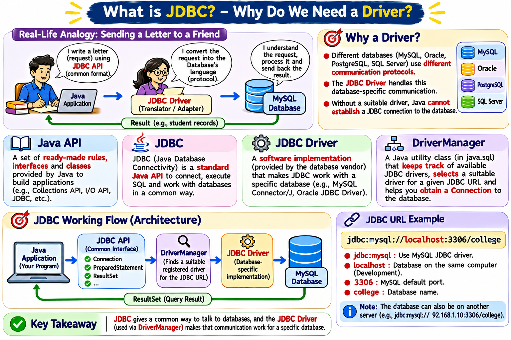
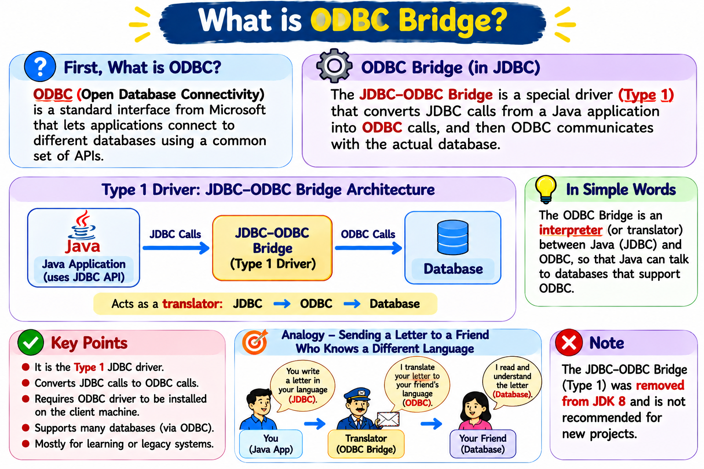
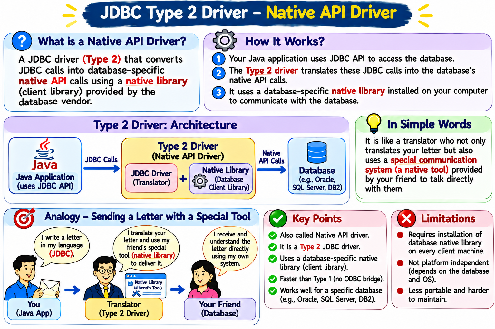
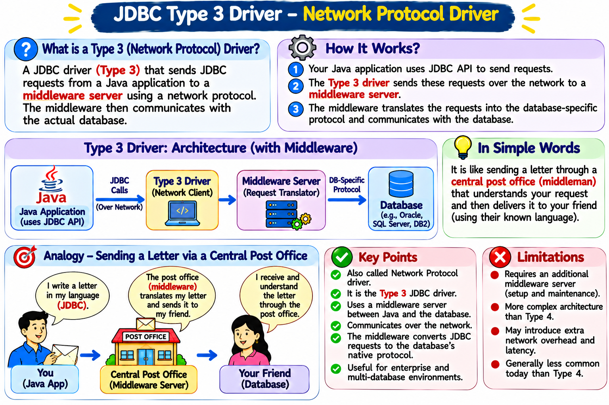
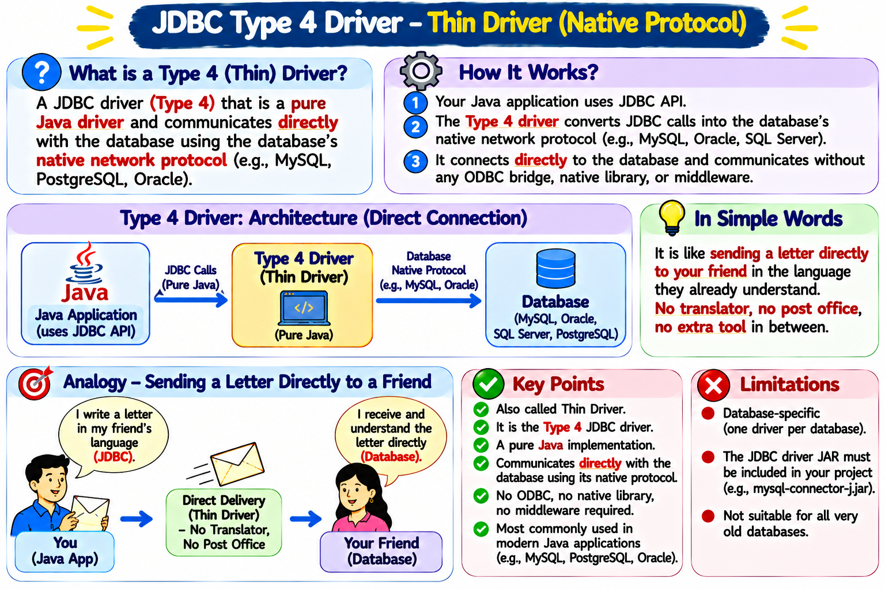

×

Master Java Database Connectivity with Interactive Examples
Imagine a Java application that needs to save a student's marks in MySQL. Java code and the database are different software systems. They need an agreed way to exchange requests and results.
Important: SQL tells the database what work to do. A communication mechanism is still needed to send that SQL request to the database and receive the response.
You write a letter in a common format. A translator converts it into the language your friend understands. Your friend reads it, acts on it and sends a reply. The translator helps you understand the reply too.
Teaching point: A JDBC driver is not the database and it is not the SQL query. It is the software component that enables the Java program to communicate with a particular database system.
Use this diagram to explain the complete idea before introducing the four driver types.

Image file: jdbc_why_driver.png (place it in the same folder as this HTML file)
API stands for Application Programming Interface. Think of it as a ready-made set of rules, interfaces and classes that Java provides so programmers can use a capability without building everything from scratch.
For example, the Collections API gives classes and interfaces to work with lists and sets. The JDBC API gives interfaces and classes to work with databases.
JDBC (Java Database Connectivity) is the standard Java API for connecting to databases, sending SQL statements, processing results and managing transactions.
It gives Java programmers a common set of interfaces and classes, such as Connection, PreparedStatement, ResultSet and DriverManager.
Why is a common API useful? Your Java code can use a familiar programming model for different databases. You may need to change the driver dependency, JDBC URL, credentials and sometimes database-specific SQL, but you do not need to learn a completely different Java connectivity API for every database.
A JDBC driver is a database-specific software implementation of the JDBC interfaces. It knows how to communicate with its database using the database's supported protocol or client technology.
Without a suitable driver implementation, a normal JDBC application cannot establish a JDBC connection to that database.
DriverManager is a JDBC utility class in the java.sql package. It keeps track of available JDBC drivers and helps select a driver that accepts the JDBC URL supplied by the application.
When your program calls DriverManager.getConnection(...), DriverManager checks the registered drivers, asks a suitable driver to handle the URL, and returns a Connection if the connection succeeds.
Analogy: DriverManager is like a reception desk. You tell it which destination/database you want to reach; it finds an available suitable driver to help establish the connection.
Important clarification: DriverManager is not itself the MySQL or Oracle driver. It coordinates driver selection and connection creation. The selected JDBC driver performs the database-specific communication.
Ready-made rules, interfaces and classes provided by Java.
The Java standard API for database operations.
Finds a suitable registered driver for the JDBC URL and helps obtain a connection.
Implements the database-specific communication.
Executes SQL and sends back results or status.
DriverManager.getConnection(url, user, password).Connection object to your program.import java.sql.Connection;
import java.sql.DriverManager;
import java.sql.SQLException;
public class JdbcConnectionDemo {
public static void main(String[] args) {
String url = "jdbc:mysql://localhost:3306/college";
String user = "root";
String password = "your_password";
try (Connection con =
DriverManager.getConnection(url, user, password)) {
System.out.println("Connected to the database!");
} catch (SQLException e) {
e.printStackTrace();
}
}
}
What is in the URL? jdbc:mysql identifies the JDBC subprotocol for MySQL; localhost is the database host; 3306 is the usual MySQL port; and college is the database name.
Note for modern Java: With JDBC 4.0+ drivers that support automatic driver discovery and are on the application's classpath/module path, you normally do not need to call Class.forName() manually. The driver is commonly discovered automatically.
Java API: Ready-made programming rules and tools.
JDBC: Java's standard API for database connectivity.
JDBC Driver: Database-specific implementation that makes communication possible.
DriverManager: Finds a suitable registered driver for the JDBC URL and helps create the connection.
Remember: JDBC defines the common way to ask for database operations; the driver knows how to communicate with the particular database.
A JDBC driver is a software component that enables Java applications to interact with databases. It acts as a translator between Java code and database-specific protocols.
Think of sending a message to your friend in another country. Each JDBC driver type is like a different way of delivering that message!
Translates JDBC calls to ODBC calls
Status: Deprecated in Java 8+
Analogy:You give your letter to a teacher → translator → postal service → friend
Uses database-specific native libraries
Performance: Better than Type 1
Analogy:You give it to a smart courier who knows both languages—but only works in your city.
Uses middleware server for communication
Advantage: Database independent
Analogy:You send it to a central dispatch center—they figure out how to send it.
Direct communication with database
Most Popular: Platform independent
Analogy:You send it straight to your friend using an express direct service!
Explore the detailed architectural diagrams below to understand how each JDBC driver converts Java calls into database actions, along with their real-world analogies, benefits, and limitations.
Architecture Overview: The JDBC-ODBC Bridge translates JDBC method calls into Microsoft ODBC function calls, which then communicate with the target database through an installed ODBC driver.

Java Application (JDBC API) → JDBC-ODBC Bridge (Type 1) → ODBC Calls → ODBC Driver → Database. Acts as an interpreter between Java and ODBC.
Sending a letter through an interpreter: You write a letter in your native language (JDBC). A translator (ODBC Bridge) translates it into your friend's language (ODBC), and postal service delivers it.
// Historical Type 1 Connection (Obsolete - Do NOT use in Java 8+)
Class.forName("sun.jdbc.odbc.JdbcOdbcDriver");
Connection conn = DriverManager.getConnection("jdbc:odbc:myDataSource", "username", "password");
Architecture Overview: A hybrid driver (partly Java, partly native C/C++). It converts JDBC API calls into vendor-specific database native client calls using a client library installed on the client machine.

Java Application (JDBC API) → Type 2 Driver (JDBC Translator + Native Client Library) → Native API Calls → Database (e.g., Oracle, IBM DB2, SQL Server).
Sending a letter with a special tool: You write a letter, and a local courier uses a specific proprietary tool provided by your friend to deliver it directly to them.
// Example Type 2 Driver (Oracle OCI - requires Oracle Client installed on client OS)
Class.forName("oracle.jdbc.driver.OracleDriver");
Connection conn = DriverManager.getConnection("jdbc:oracle:oci:@localhost:1521:xe", "system", "password");
Architecture Overview: A 100% pure Java client driver that sends generic JDBC requests over the network to an intermediate middleware server. The middleware server then translates and delivers the request to the target database.

Java Application (JDBC API) → Type 3 Driver (Network Client) → [Over Network] → Middleware Server (Request Translator) → Database-Specific Protocol → Database.
Sending a letter via a central post office: You send your letter in standard format to a central dispatch post office (middleware). The post office translates and forwards it to your friend.
// Example Type 3 Driver (Communicates with a Middleware Application Server)
Class.forName("com.middleware.driver.MiddlewareDriver");
Connection conn = DriverManager.getConnection("jdbc:middleware://middleware-server:8080/companyDB", "appUser", "secret");
Architecture Overview: A 100% pure Java driver that converts JDBC calls directly into the database engine's proprietary network protocol (e.g., MySQL on port 3306, PostgreSQL on port 5432, Oracle Thin on port 1521). It connects directly to the database without intermediate bridges, native libraries, or middleware servers.

Java Application (JDBC API) → Type 4 Driver (Pure Java Thin Driver) → [Direct Database Network Protocol] → Database (MySQL, PostgreSQL, Oracle, SQL Server).
Sending a letter directly to your friend: You send your message straight to your friend in the language they already speak — direct express delivery with zero translators, zero middleman post offices, and zero extra tools!
mysql-connector-j via Maven/Gradle) in your project.// Modern Type 4 Driver Examples (Pure Java - Direct Connection)
// 1. MySQL (com.mysql.cj.jdbc.Driver)
Class.forName("com.mysql.cj.jdbc.Driver");
Connection connMySQL = DriverManager.getConnection("jdbc:mysql://localhost:3306/college_db", "root", "root123");
// 2. PostgreSQL (org.postgresql.Driver)
Class.forName("org.postgresql.Driver");
Connection connPG = DriverManager.getConnection("jdbc:postgresql://localhost:5432/finance_db", "postgres", "secret");
// 3. Oracle Thin Driver (oracle.jdbc.OracleDriver)
Class.forName("oracle.jdbc.OracleDriver");
Connection connOracle = DriverManager.getConnection("jdbc:oracle:thin:@localhost:1521:xe", "hr", "hr");
Use this reference table to compare all four JDBC driver types at a glance for exams and technical interviews:
| Driver Type | Common Name | Implementation | Client Machine Setup | Platform Independent? | Speed / Performance | Modern Recommendation |
|---|---|---|---|---|---|---|
| Type 1 | JDBC-ODBC Bridge | Java + ODBC Binary | ODBC Driver required | ❌ No | Slow (double translation) | ❌ Removed in Java 8 (Obsolete) |
| Type 2 | Native-API Driver | Java + Native C/C++ | Vendor DB Client Library | ❌ No | Moderate-Fast | ⚠️ Legacy systems only |
| Type 3 | Network Protocol | 100% Pure Java Client | None (Needs Middleware Server) | ✅ Yes (Client-side) | Moderate (Network hop) | ⚠️ Specialized multi-tier systems |
| Type 4 | Thin Driver (Direct) | 100% Pure Java | None (Just Driver JAR) | ✅ 100% Yes | ⚡ Fastest (Direct Protocol) | ✅ Recommended & Standard |
For a more detailed explanation of each JDBC driver type, including diagrams and extended notes, you can visit the below resource:
🔗 Tutorialspoint: JDBC Driver Types
This reference will help you understand when and why to choose a specific driver type, along with compatibility and use-case scenarios.
Register the JDBC driver with DriverManager
Create a connection to the database
Create Statement, PreparedStatement, or CallableStatement
Execute SQL queries using the statement
Handle ResultSet and extract data
Close Connection, Statement, and ResultSet
CRUD stands for Create, Read, Update, Delete - the four basic operations for persistent storage.
Insert new records into the database
SQL: INSERT INTO
Method: executeUpdate()
Retrieve data from the database
SQL: SELECT
Method: executeQuery()
Modify existing records
SQL: UPDATE
Method: executeUpdate()
Remove records from the database
SQL: DELETE
Method: executeUpdate()